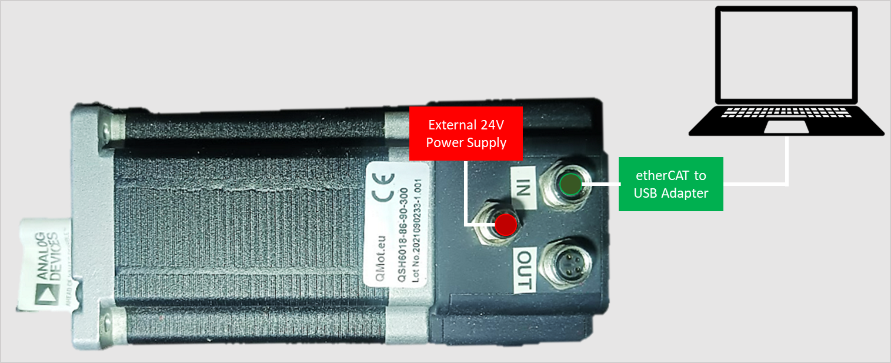
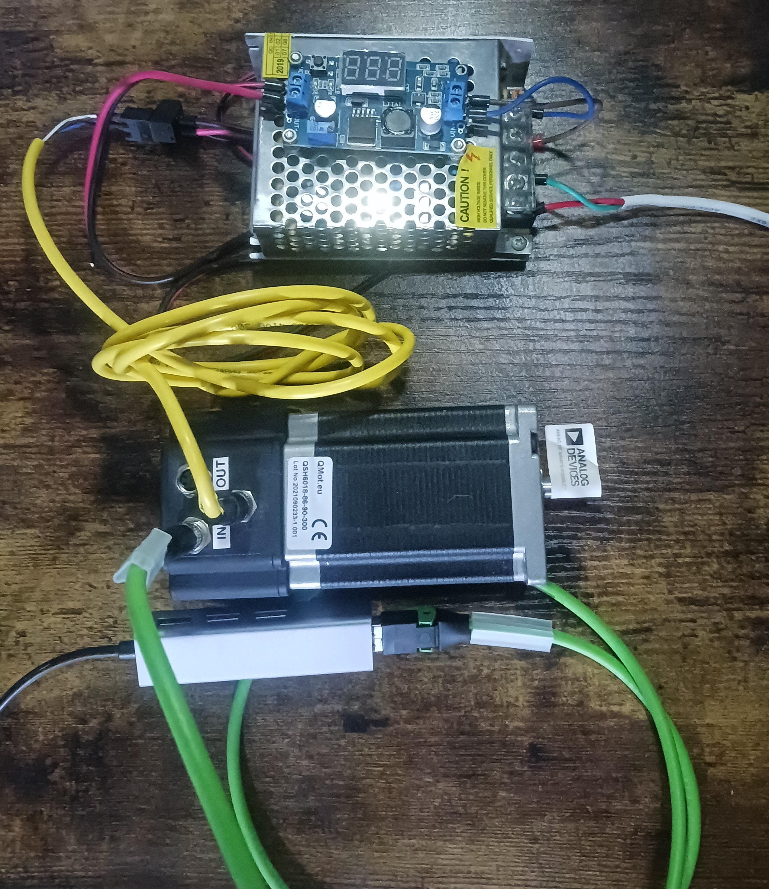
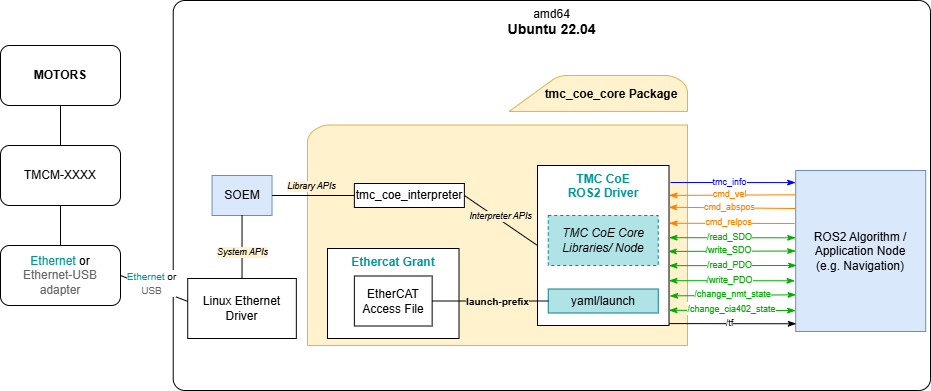

adi_tmc_coe_core |
|---|
Core package for Trinamic Motor Controllers (TMC) that uses CANopen-over-etherCAT(CoE) protocol. |
Background
Supported TMC boards: TMCM-1461-CoE
Supported communication interface and interface driver: CANopen-over-etherCAT (SOEM)
Supported ROS and OS distro: Humble (Ubuntu 22.04)
Supported platform: Intel x86 64-bit (amd64)
Supported setup: Single/Multiple TMC in Single ECAT interface (namespace-managed)
:memo: Note: Although officially supported TMC boards are only the abovementioned, all market-ready TMCs with YAMLs in this repository are also expected to work and can be tried and tested by the users. Contact the Developers for any issues encountered.
Hardware
For the tested TMCM-1461-CoE setup, the following are used:
1 x TMCM-1461-CoE
1 x External 24V power supply
1 x USB to LAN ethernet adapter
Also the following:
1 x 4pin female M8-RJ45 etherCAT cable
1 x 4 pin male M8 power supply cable
The image below shows the connection diagram of the setup (with labels):

The image below shows the actual setup used (for reference):

Software
Software Architecture

Software Dependencies
Assumptions before building this package:
Clone
In the website:
Make sure that the branch dropdown is set to “humble”.
Click the “Clone” or “Code” button, then copy the SSH or HTTPS link (eg, “*.git”).
In a terminal, do the following:
$ cd ~/ros2_ws/src
$ git clone <copied SSH o HTTPS link here> adi_tmc_coe #clones repo to "adi_tmc_coe" directory name
Build
Do proper exports first:
# $ source /opt/ros/<ROS version>/setup.bash
$ source /opt/ros/humble/setup.bash
Where:
“ROS version” is the user’s actual ROS version
Then, install all required dependencies (See SoftwareDependencies) using rosdep:
$ cd ~/ros2_ws
$ rosdep init
$ rosdep update
$ rosdep install --from-paths src -y --ignore-src
Then:
$ cd ~/ros2_ws
$ colcon build
## To clean first before building, you may run the following instead:
## $ colcon build --cmake-clean-first
:memo: Note: It is recommended that 1 terminal is dedicated to building the package/workspace to avoid complex issues as mentioned in ROS2 Source the overlay
Pre-Launch (One-time per setup)
Not all Trinamic modules are on TMCL_IDE specially CoE due to different interface used. Check module first for other communication protocol than CoE (UART, USB or CAN). Proceed to next steps if module is available in TMCL_IDE.
:memo: Note: Different communication protocol might need different cable to communicate with TMCL_IDE (e.g. UART - USB to TTL adapter, USB - TypeC/TypeB/Micro, CAN - PCAN-USB adapter).
If it’s the first time to use the set of motors for the TMC, it is required to calibrate and tune the PID settings of the motors first.
Do the calibrations/tuning by downloading and using TMCL-IDE.
BLDC Motors
Calibrate the motors
For a run-through/tutorial of how the calibration is done in the TMCL-IDE via its Wizard Pool feature, check this link.
Tune the PI settings of the motors
For a run-through/tutorial of how the PI tuning is done in the TMCL-IDE via its PI Tuning feature, check this link.
:memo: Note: For all the calibration and tuning done, store all the parameters set from TMCL_IDE on the board’s EEPROM. Do this by doing any of the following:
Clicking the “Store Parameter” under Settings of each axis
Using STAP (Store Axis Parameters) command from Direct Mode
Creating and uploading a TMCL Program, and enabling the “auto start mode” under SGP (Set Global Parameter) command from Direct Mode
:memo: Note: Some boards don’t have “auto start mode”, so in such a case, use the other options to store the parameters.
Stepper Motors
Calibrate the motors
For a run-through/tutorial of how the calibration is done in the TMCL-IDE via its Wizard Pool feature, check this link.
For more information about Trinamic features on stepper motors, visit this link.
:memo: Note: For all the calibration and tuning done, store all the parameters set from TMCL_IDE on the board’s EEPROM. Do this by:
Creating and uploading a TMCL Program, and enabling the “auto start mode” under SGP (Set Global Parameter) command from Direct Mode
Pre-Launch (One-time)
The ethercat_grant node/utility is needed to run the tmc_coe_ros2_node without root privileges.
If built from source, you will need to go through ethercat_grant/Installation.
Config/Launch File
Before launching the package, make sure that the interface_name on the yaml file is correct. Modify the corresponding yaml file depending on your setup:
If using 1 slave with 1 axis, modify 1slave_1axis.yaml,
If using 2 slaves with 1 axis per slave, modify 2slaves_1axis_per_slave.yaml,
If using 2 slaves with 2 axes per slave, modify 2slaves_2axes_per_slave.yaml,
Modify interface_name (check Parameter) and set the interface name of your adapter.
To check the interface name, run this command in terminal:
$ ifconfig
Interface name is usually starts with enx / eth. Copy and paste the interface name on the interface_name in yaml file.
Also, check the launch file if correct trinamic board autogenerated yaml and config yaml is loaded. TMCM-1461 setup is the default namespace for 1slave_1axis and 2slaves_1axis_per_slave launch files, provide the correct namespace if other device is used.
Launch
This package has 3 sample launch files for:
single slave with single axis (used module is TMCM-1461-CoE)
$ ros2 launch adi_tmc_coe_core 1slave_1axis.launch
2 slaves with single axis on both slaves (used module is 2x TMCM-1461-CoE)
$ ros2 launch adi_tmc_coe_core 2slaves_1axis_per_slave.launch
2 slaves with 2 axes on both slaves
$ ros2 launch adi_tmc_coe_core 2slaves_2axes_per_slave.launch
Nodes
tmc_coe_ros2_node
:memo: Note: For those with <slave_number> and <motor_number> in the topic names, these are the slave number and motor number respectively. For example, if there are 2 slaves/devices both with single motor used, there should be two published topics for tmc_coe_info, specifically /tmc_coe_info_1_0 for device 1 motor 0 and /tmc_coe_info_2_0 for device 2 motor 0.
Published topics
These are the default topic names, topic names can be modified as a ROS parameter.
/tmc_info_<slave_number>_<motor_number> (adi_tmc_coe_interfaces/msg/TmcCoeInfo)
Publish information
Refer to adi_tmc_coe_interfaces/msg/TmcCoeInfo for more info
Subscribed topics
/cmd_vel_<slave_number>_<motor_number> (geometry_msgs/msg/Twist)
Velocity command (rpm or m/s)
/cmd_abspos_<slave_number>_<motor_number> (std_msgs/msg/Int32)
Absolute position command (steps or degree angle)
/cmd_relpos_<slave_number>_<motor_number> (std_msgs/msg/Int32)
Relative position command (steps or degree angle)
Advertised services
/read_SDO (adi_tmc_coe_interfaces/srv/ReadWriteSDO)
Executes a read command using SDO protocol
The output contains raw data (velocity = rpm, position = steps) from the board. Do not expect same unit from the publisher.
Refer to adi_tmc_coe_interfaces/srv/ReadWriteSDO for more info
/write_SDO (adi_tmc_coe_interfaces/srv/ReadWriteSDO)
Executes a write command using SDO protocol
The input value should be the default unit (velocity = rpm, position = steps) from the board. Do not expect same unit from the publisher.
Refer to adi_tmc_coe_interfaces/srv/ReadWriteSDO for more info
/read_PDO (adi_tmc_coe_interfaces/srv/ReadWritePDO)
Executes a read command using PDO protocol.
The output contains raw data (velocity = rpm, position = steps) from the board. Do not expect same unit from the publisher.
Refer to adi_tmc_coe_interfaces/srv/ReadWritePDO for more info
/write_PDO (adi_tmc_coe_interfaces/srv/ReadWritePDO)
Executes a write command using PDO protocol
The input value should be the default unit (velocity = rpm, position = steps) from the board. Do not expect same unit from the publisher.
Refer to adi_tmc_coe_interfaces/srv/ReadWritePDO for more info
/change_nmt_state (adi_tmc_coe_interfaces/srv/ChangeNMTState)
Changes the NMT state of the specified device/slave
Refer to adi_tmc_coe_interfaces/srv/ChangeNMTState for more info
/change_cia402_state (adi_tmc_coe_interfaces/srv/ChangeCia402State)
Changes the CiA402 or DS402 state of the specified device/slave
Current Limitation: Can only change DS402 of Motor 0/Axis 0
Refer to adi_tmc_coe_interfaces/srv/ChangeCia402State for more info
/cyclic_sync_mode (adi_tmc_coe_interfaces/srv/CyclicSyncMode)
Controls the motor’s velocity, position or torque in cyclic synchronous mode.
The input value should be the default unit (velocity = rpm, position = steps) from the board. Do not expect same unit from the publisher.
Refer to adi_tmc_coe_interfaces/srv/CyclicSyncMode for more info
Parameters
:memo: Notes:
Communication Interface Parameter is essential in initializing etherCAT.
If any of these paramameters are not set/declared, default values will be used.
To know more details about each parameter, you can execute
$ ros2 param describe <node> <parameter>
Communication Interface Parameter
interface_name (string, default: “”)
Name of the NIC (Network Interface Card) detected by the PC. Use command
$ifconfigto check the interface name, it usually starts with ethxxx or enxxxx.
SDO_PDO_retries (int, default: 1)
Indicates how many times the SDO and PDO will retry in sending before logging an error if SDO or PDO fails.
interface_timeout (double, default: 3.0)
Indicates how long should the node will wait for the slave to be responsive.
TMC COE ROS Node Parameters
en_slave (int[], default: [0])
Enables/disables device/slave connected. If disabled, settings for those motors will be ignored or not set.
adhoc_mode (int[], default: [0])
This mode expects that the used module is not known. The velocity, position and torque relies on the additional_ratio_* values.
slv<slave_number>/en_motors (int[], default: [0])
e.g. slv1/en_motors
Enables/disables active motors or axes in each slave. If disabled, settings for those motors will be ignored or not set.
Motor Configuration Settings
:memo: Notes:
The following parameters can be provided for each motor of each slave, otherwise, default will be used
_Resulting parameter will be prefixed by
slv<slave_number>.motor<motor_number>. (e.g.slv1.motor0.pub_rate_tmc_coe_info)
pub_rate_tmc_coe_info (int, default: 10)
Publish rate (hertz) of TMC information
en_pub_tmc_coe_info (bool, default: false)
Enables/disables publishing of TMC information
pub_actual_vel (bool, default: false)
Enable/Disable actual velocity that the user can optionally publish every publish rate as long as en_pub_tmc_info is true
pub_actual_pos (bool, default: false)
Enable/Disable actual position that the user can optionally publish every publish rate as long as en_pub_tmc_info is true
pub_actual_trq (bool, default: false)
Enable/Disable actual torque that the user can optionally publish every publish rate as long as en_pub_tmc_info is true
tmc_coe_info_topic (string, default: /tmc_coe_info_<slave_number>_<motor_number>)
tmc_coe_info topics that will contain chosen TMC info that will be published
tmc_cmd_vel_topic (string, default: /cmd_vel_<slave_number>_<motor_number>)
Twist topics that will be the source of target velocity to be set on the TMC
tmc_cmd_abspos_topic (string, default: /cmd_abspos_<slave_number>_<motor_number>)
Int32 topics that will be the source of target position to be set on the TMC
tmc_cmd_relpos_topic (string, default: /cmd_relpos_<slave_number>_<motor_number>)
Int32 topics that will be the source of target position to be set on the TMC
wheel_diameter (float, default: 0.0)
Wheel diameter that is attached on the motor shaft directly. This is to convert linear values to rpm
If wheel diameter is 0, cmd_vel is equal to rpm
additional_ratio_vel (float, default: 1.0)
Additional Ratio for velocity for general purposes (adhoc mode, added pulley or gear trains). Default value 1 means disabled
additional_ratio_pos (float, default: 1.0)
Additional Ratio for position for general purposes (adhoc mode, added pulley or gear trains). Default value 1 means disabled
additional_ratio_trq (float, default: 1.0)
Additional Ratio for torque for general purposes (adhoc mode). Default value 1 means disabled
Autogenerated Parameters
:memo: Notes:
These parameters are generated per TMCM device which contain CANOpen Object Dictionary attributes
Be careful when changing these parameter values, as the behavior of the node/device may change
Resulting parameter will be prefixed by
tmcm_<device_number>.(e.g.tmcm_1461.obj_name)
obj_name (string[], default: [])
Object Name attribute of all object dictionary entries in specific device
index (string[], default: [])
16-bit base address of the object
sub_index (string[], default: [])
8-bit subindex of the object
datatype (string[], default: [])
Data type of the object (e.g. UINT16, UINT8, etc.)
ethercat_grant
adi_ethercat_grant_node is a ROS2 node for ethercat_grant. Theoretically, if this package is available via binary installation, there should be no further instructions required.
Installation
If this package is installed via source, before running the launch file, do the steps below:
Open /scripts directory
Make script executable
$ chmod +x ethercat_grant_installation.shRun the script with sudo
$ sudo ./ethercat_grant_installation.shRun the launch file
Quick Tests
Test Velocity Mode
To do a quick test of Velocity Mode, there is a fake velocity script that the user can run. Idea is, this script will send Velocity commands (as a ROS topic), then the first motor should be expected to:
Increase velocity every 3secs, clockwise (in m/s: 3, 6, 9)
Stop for 5secs
Increase velocity every 3secs, counter-clockwise (in m/s: -3, -6, -9)
Stop for 5secs
To proceed with the test, execute these following commands on three (3) different terminals (in sequence):
:memo: Note: Assuming that the package was built in Terminal 1.
Terminal 2 |
Terminal 3 |
Terminal 4 |
|---|---|---|
|
|
|
Monitor the velocity of the first motor (watch out for velocity value at Terminal 3).
:memo: Notes:
Terminals 3 and 4 are best viewed side-by-side.
You may Ctrl-C the command in Terminal 2 and 3 once you’re done.
The command in Terminal 4 auto-stops by itself.
Test Position Mode
To do a quick test of Position Mode, there is a fake position script that the user can run. Idea is, this script will send Position commands (as a ROS topic), then the first motor should be expected to:
Rotate 360 degrees (clockwise) every 5 secs, 3 times
Stop for 5secs
Rotate 360 degrees (counter-clockwise) every 5 secs, 3 times
Stop for 5secs
To proceed with the test, execute these following commands on three (3) different terminals (in sequence):
:memo: Note: Assuming that the package was built in Terminal 1.
Terminal 2 |
Terminal 3 |
Terminal 4 |
|---|---|---|
|
|
|
Monitor the position of the first motor (watch out for position value at Terminal 3).
:memo: Notes:
Terminals 3 and 4 are best viewed side-by-side.
You may Ctrl-C the command in Terminal 2 and 3 once you’re done.
The command in Terminal 4 auto-stops by itself.
Limitations
Current modules that are tested does not include Profile Torque Mode but still included on topic names for ease of implementation if decided to continue.
Homing Mode is not implemented.
Cyclic Synchronous Modes only accepts raw value (no conversions of unit) and is not the same with subscriber callbacks.
Host PC specifications play a crucial role to ensure low latency when exchanging data. 4 or more cores are recommended. Threads will increase depending on the number of devices/slaves and motors.
Due to having and allowing multiple threads (e.g. 1 thread for processdata cycle, 1 thread that executes SDOread/write), a ~0.01s delay was added in each SDOread/write retries to ensure proper processing.